Aplicar padrões de projeto conforme especificações técnicas do projeto.
Vamos iniciar os estudos?
PlayComo resolver problemas de software usando os padrões de projeto estruturais?
O conceito de padrões de projeto em si foi inspirado pelas ideias do arquiteto Christopher Alexander, que na década de 1970 escreveu sobre padrões de design no contexto da arquitetura física e urbanismo, sugerindo que certos designs podem resolver problemas recorrentes no ambiente construído. Essa analogia foi adaptada para o design de software e continua a influenciar a maneira como os sistemas são concebidos e construídos até hoje.
Os padrões de projeto estruturais são fundamentais no desenvolvimento de software para resolver problemas comuns de composição e design de classes e objetos. Eles ajudam a definir maneiras simples de compor interfaces e definir formas de combinar objetos para obter novas funcionalidades. Esses padrões focam em simplificar a estrutura do sistema de software, promovendo a reutilização do código e aprimorando a relação entre os elementos. Ao facilitar a manutenção e a extensibilidade do código, os padrões estruturais tornam o design geral mais robusto e menos suscetível a erros e problemas de compatibilidade.
Imagine que você está construindo um jogo de aventura épica com várias fases e desafios emocionantes. No entanto, à medida que o jogo cresce, você percebe que a organização das fases, personagens e interações entre eles está se tornando um verdadeiro labirinto. Além disso, a adição de novos recursos e mecânicas fica cada vez mais complicada, e fazer alterações em um lugar pode afetar toda a estrutura do jogo, causando bugs e problemas inesperados. Essa confusão desafia a escalabilidade e manutenção do jogo.
É aqui que os padrões de projeto estruturais entram em cena como verdadeiros mapas que nos guiam por esse labirinto. Eles nos ajudam a organizar e dividir o jogo em partes coesas, como encaixar blocos de quebra-cabeça. Dessa forma, podemos alterar e expandir o jogo com facilidade, garantindo que cada mudança se integre perfeitamente e sem perturbar o equilíbrio geral. Os padrões estruturais nos permitem criar um mundo de jogo sólido e consistente, garantindo uma experiência incrível para os jogadores, enquanto evitamos se perder no caos da complexidade.
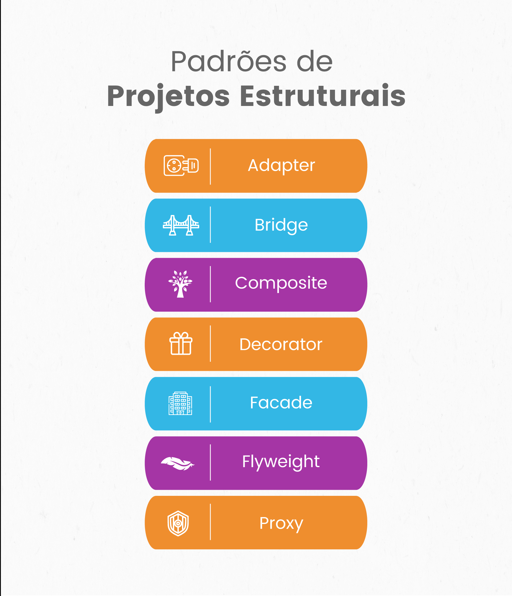No contexto do desenvolvimento de jogos, os padrões estruturais são particularmente úteis devido à complexidade inerente desse tipo de sistema e à necessidade de eficiência e flexibilidade. Por exemplo:
Nesta aula, veremos três padrões estruturais: o Decorator, Adapter e Facade. Acompanhe os exemplos e faça as atividades para fortalecer o conhecimento adquirido.
Imagine que você está jogando um jogo de RPG, como The Legend of Zelda ou World of Warcraft. Você sabe como você começa com equipamentos básicos, mas à medida que avança no jogo, você pode adicionar melhorias ou "encantamentos" aos seus equipamentos? Por exemplo, você pode adicionar um encantamento de fogo à sua espada para causar mais dano, ou um encantamento de velocidade às suas botas para correr mais rápido.
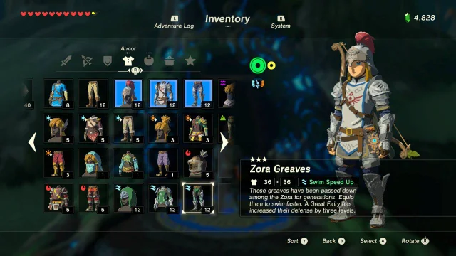No mundo da programação, temos algo parecido chamado Padrão Decorator. É como os encantamentos no seu jogo. Quando usamos o Padrão Decorator, estamos basicamente adicionando "encantamentos" ou melhorias extras aos nossos objetos.
Cenário básico: Você tem uma classe à qual deseja adicionar alguns comportamentos de maneira flexível sem modificar a classe original.
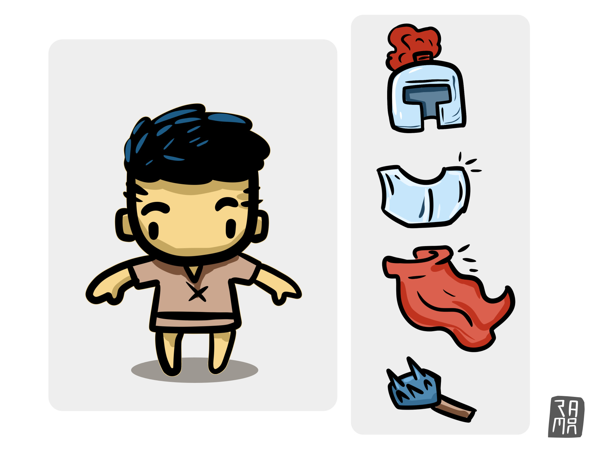Imagine um jogo de batalhas, no qual o personagem é um cavaleiro que inicia com uma armadura padrão e, ao longo do jogo, pode adicionar novos elementos à sua armadura. Esses elementos expandem a experiência do personagem.
Mãos no código
Para começar, é bom criarmos uma interface IArmor que define o comportamento básico de uma armadura.
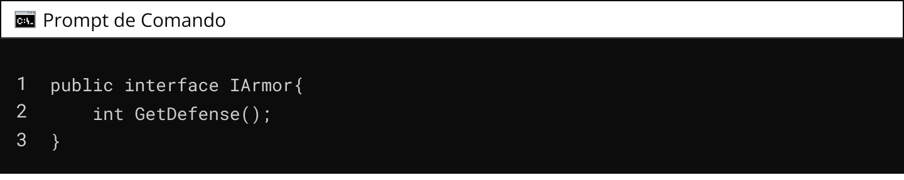Após isso, vamos criar a classe BasicArmor, que representa a armadura padrão do cavaleiro.
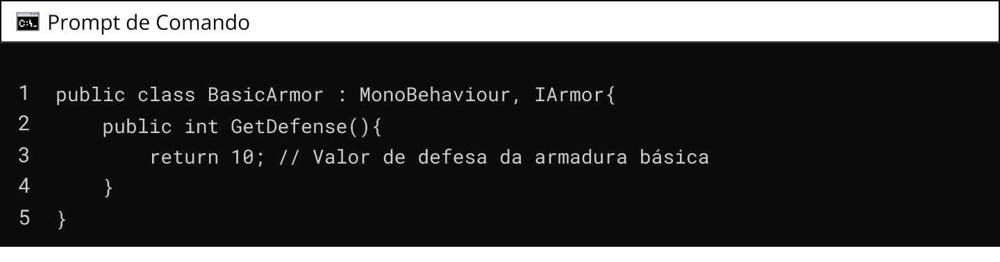Agora é a hora de criar o decorator, materializado na classe abstrata ArmorDecorator, que servirá como base para os elementos adicionais que podem ser decorados na armadura.
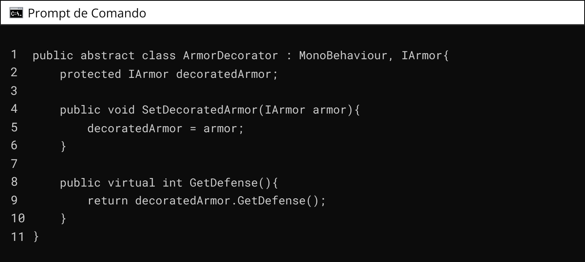Podemos agora criar algumas classes de elementos adicionais que podem ser decorados na armadura.
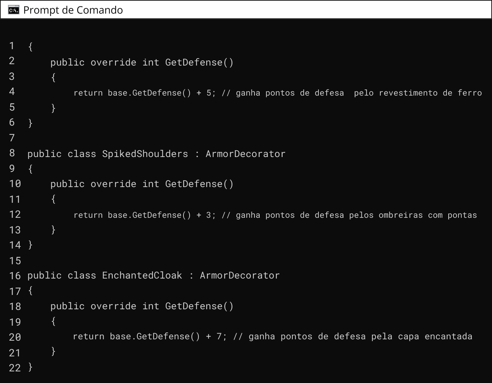Por fim, podemos usar essas classes para criar diferentes combinações de armaduras decoradas.
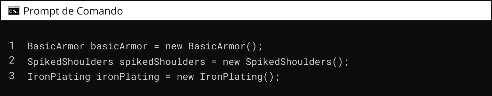 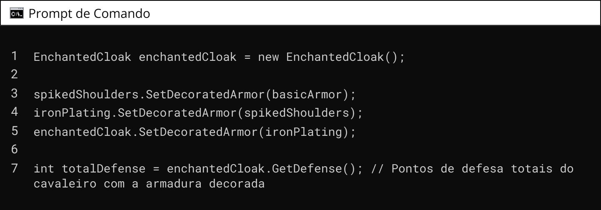Nesse exemplo, podemos adicionar elementos extras à armadura do cavaleiro de forma flexível, combinando diferentes decorações para obter um valor de defesa final. O padrão Decorator permite que adicionemos funcionalidades extras às classes existentes de forma dinâmica, sem a necessidade de modificar sua estrutura.
Pubg é um jogo que traz um bom exemplo de implementação do padrão Decorator. Nele, tem armas nas quais pode anexar vários acessórios que encontra ao longo da partida, miras, silenciadores, etc, modificando as propriedades da arma.
Agora você já é capaz de implementar novas funcionalidades a um item de jogo, parabéns!
QUESTÃO 1
Qual das seguintes afirmações melhor descreve o padrão de projeto Decorator?
Imagine que você está jogando um jogo como o Pokémon. Você sabe como cada Pokémon tem seus próprios movimentos e habilidades, certo? Agora, imagine que você tem um Pikachu que só sabe usar ataques elétricos, mas você está lutando contra um Geodude, que é super resistente a ataques elétricos. Seria ótimo se o Pikachu pudesse usar um ataque de água, não seria?
Na engenharia de software, o padrão Adapter é um padrão de projeto estrutural que permite a colaboração entre interfaces incompatíveis. Este padrão atua como um intermediário, convertendo a interface de uma classe existente em outra interface esperada pelos clientes. O Adapter envolve a classe original, capturando as chamadas para seus métodos e traduzindo-as em um formato e chamadas de métodos que a classe original pode entender e processar. Isso é particularmente útil quando se trabalha com código legado, bibliotecas de terceiros ou sistemas externos onde você não tem controle ou não pode modificar a implementação da classe diretamente. O padrão Adapter pode ser implementado de duas maneiras: através de herança múltipla, utilizando uma "classe adapter" que herda tanto da interface alvo quanto da classe adaptada, ou por composição, onde a "classe adapter" contém uma instância da classe adaptada.
No desenvolvimento de jogos, o padrão Adapter é frequentemente utilizado para fazer a ponte entre o motor do jogo e outros sistemas ou bibliotecas que não foram originalmente projetados para trabalhar juntos. Por exemplo, um desenvolvedor pode querer integrar um sistema de física de terceiros ou uma biblioteca de renderização de gráficos com o motor do jogo existente. O padrão Adapter permite que o desenvolvedor crie uma camada de abstração que traduz as chamadas do motor do jogo para a interface da biblioteca de terceiros, possibilitando que o motor do jogo interaja com a biblioteca como se fosse uma parte nativa do sistema.
Isso é extremamente útil para expandir as capacidades de um jogo, como adicionar suporte para novos dispositivos de entrada, integração com plataformas de mídia social ou serviços de rede, sem a necessidade de reescrever ou alterar o código do motor do jogo de forma significativa.
No jogo clássico Metal slug, o personagem principal Morden deve libertar os prisioneiros de guerra. Ao longo das fases, o jogador pode obter veículos de combate, um avião, um tanque, etc. O que permite que Morden possa mudar de modos de locomoção ao longo do do jogo é a aplicação bem sucedida do padrão de projetos Adapter.
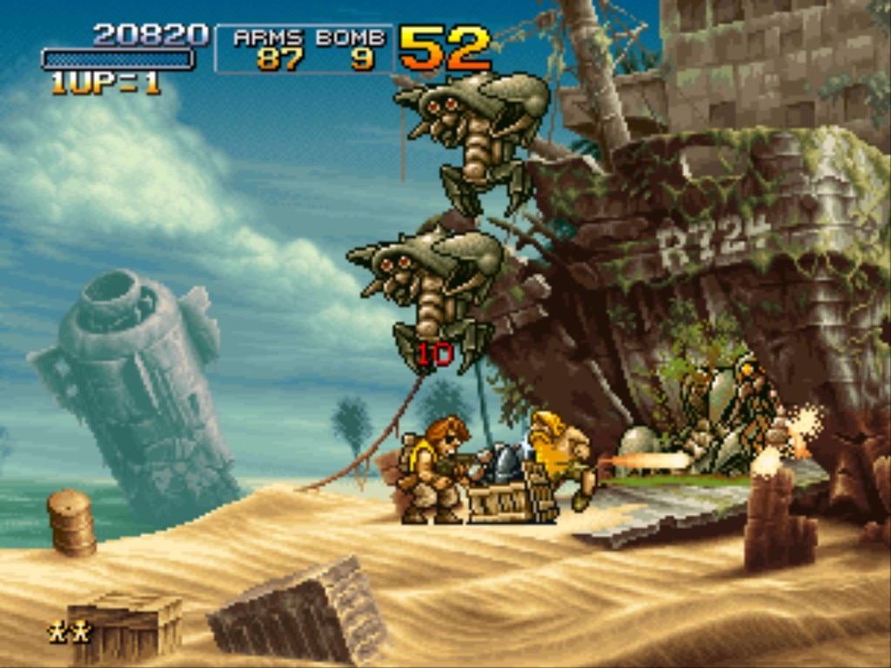Para demonstrar esse padrão, vamos aplicar o exemplo de mecânica de jogos que possui uma interface de inimigos. Entretanto, há um tipo de inimigo que é diferente dos demais e não possui a implementação do método Attack(). Em vez disso, esse inimigo lança Feitiços CastSpell().
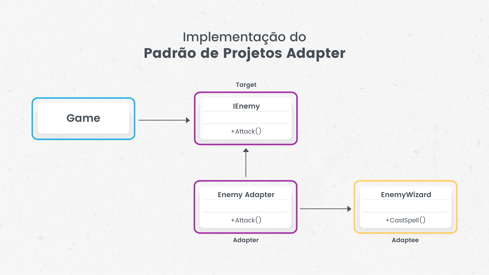Como você pode constatar no diagrama UML, no padrão de design Adapter, temos três componentes principais: o Target, o Adapter e o Adaptee. Vamos explorar cada um deles no contexto do código que apresentaremos posteriormente:
| Target (Alvo) | |
|---|---|
| No código: | IEnemy |
| Papel: | O Target é a interface que define como os clientes esperam interagir com o sistema. No nosso caso, IEnemy é a interface Target que declara o método Attack(). Esta é a interface que o código cliente espera chamar para realizar a ação de ataque. |
| Adapter (Adaptador) | |
|---|---|
| No código: | EnemyAdapter |
| Papel: | O Adapter é a classe que faz a ponte entre o Target e o Adaptee. No código, EnemyAdapter implementa a interface IEnemy e traduz chamadas ao seu método Attack() para o método CastSpell() do Adaptee (EnemyWizard). O Adapter possui uma instância do Adaptee e implementa a interface Target, permitindo que o Adaptee seja usado onde um Target é esperado. |
| Adaptee (Adaptado) | |
|---|---|
| No código: | EnemyWizard |
| Papel: | O Adaptee é a classe existente que queremos usar no sistema, mas sua interface não é compatível com o que o sistema espera. EnemyWizard é o Adaptee no nosso código, que possui um método CastSpell() para lançar feitiços. O Adaptee tem a funcionalidade que o sistema precisa, mas não na forma que o sistema pode usar diretamente. |
Em resumo, o padrão Adapter é usado para permitir que um objeto (Adaptee) com uma interface incompatível (EnemyWizard com CastSpell()) seja usado por um cliente que espera outra interface (Target - IEnemy com Attack()). O Adapter (EnemyAdapter) faz essa tradução, permitindo que o cliente interaja com o Adaptee como se fosse um Target.
Para implementar o padrão Adapter, vamos utilizar a linguagem de programação C#, na engine Unity. Como editor de código, indicamos o VSCode, entretanto, você pode usar o que achar melhor. Inicialmente criaremos uma interface chamada IEnemy, a qual será comum a todos os inimigos.
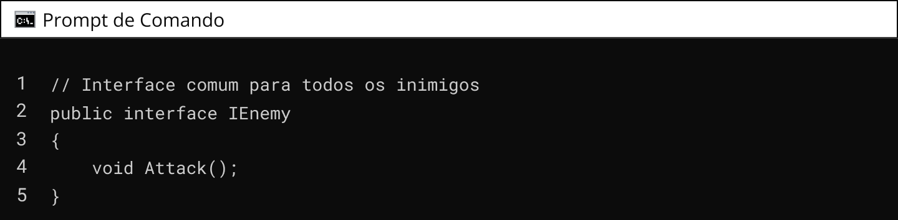Depois, implementaremos a classe que será adaptada. Aqui, essa classe implementa o comportamento do inimigo Mago, que seu ataque é diferente dos demais, pois ele lança feitiços.
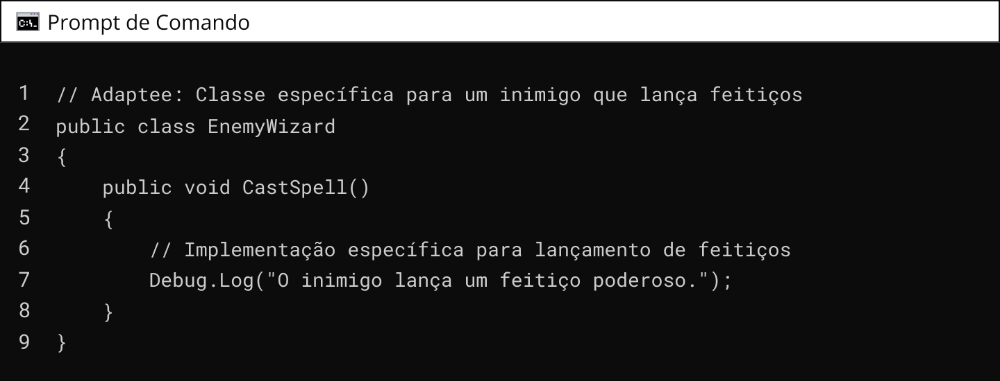Então, implementa-se o Adaptador. Essa classe fica entre a interface de inimigos, e o inimigo adaptado. Servindo justamente com um adaptador do tipo de ataque.
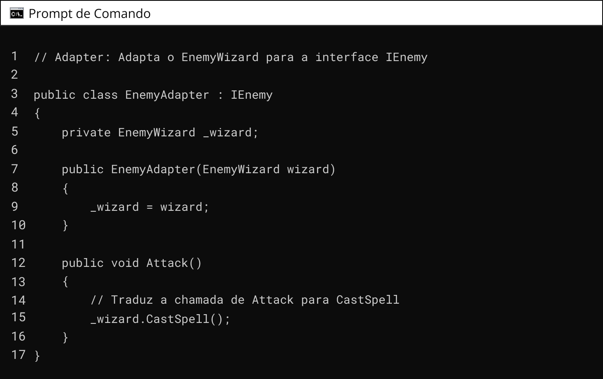Por fim, implementamos esse código no nosso cliente, ou seja, no script do jogo.
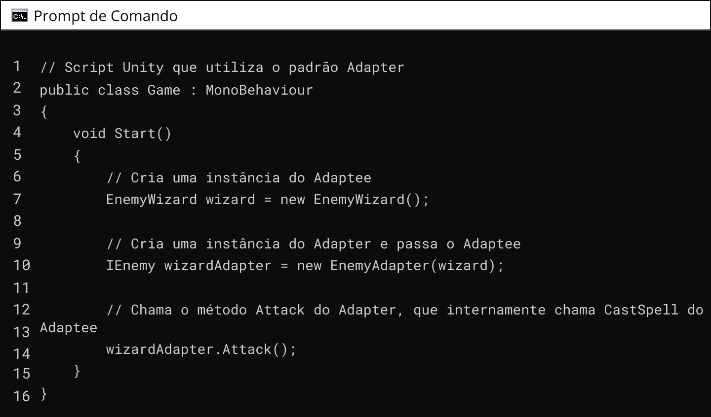Neste script Unity Game, quando o método Start é chamado (o que acontece no início da cena), um novo EnemyWizard é criado. Em seguida, um EnemyAdapter é criado, passando o EnemyWizard como argumento. Quando chamamos Attack no wizardAdapter, o EnemyWizard executa seu método CastSpell por meio do Adapter.
Este exemplo mostra como você pode usar o padrão Adapter para integrar um objeto com uma interface incompatível (EnemyWizard) em um sistema que espera objetos com uma interface específica (IEnemy). No Unity, você poderia anexar este script a um GameObject para que ele seja executado quando a cena começar. Agora para sua melhor compreensão, responda a questão abaixo:
QUESTÃO 2
Avalie se a afirmação a seguir é verdadeira ou falsa.
O Design Pattern Adapter é um padrão de design estrutural que permite que a interface de uma classe existente seja usada como outra interface, mas requer que o código-fonte da classe existente seja modificado.
Na engenharia de software, o padrão Facade é um padrão de projeto estrutural que fornece uma interface simplificada para um conjunto complexo de subsistemas, tornando o subsistema mais fácil de ser usado. Funciona como uma fachada que oculta a complexidade subjacente e oferece ao cliente uma visão simplificada do que está por trás da interface. Isso é alcançado ao se ter uma classe Facade que centraliza a comunicação e controla o acesso aos subsistemas, permitindo que mudanças internas nos subsistemas ocorram sem impactar os clientes que os utilizam.
No desenvolvimento de jogos, o padrão Facade é utilizado para encapsular sistemas complexos como física, renderização ou gerenciamento de áudio, fornecendo aos desenvolvedores uma maneira de interagir com esses sistemas de forma mais simples e abstrata. Ao usar um Facade, por exemplo, um desenvolvedor pode iniciar um som ou aplicar uma força a um objeto no jogo sem se preocupar com os detalhes internos do sistema de áudio ou física, respectivamente. Isso permite que os desenvolvedores de jogos se concentrem na lógica e no design do jogo, em vez de detalhes de baixo nível dos sistemas que estão utilizando.
Você já jogou algum jogo do tipo RTS (Real-time strategy)? Muitos são os títulos nesse estilo, Age of empires, Warhammer, RimWorld, etc. Nesse tipo de jogo, estão disponíveis diversos tipos de tropas e o objetivo do jogador é se fortalecer para vencer tropas inimigas.
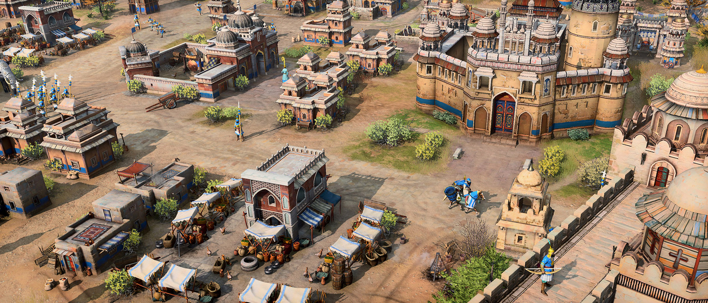Já pensou a quantidade de operações que são realizadas dentro de um centro de comando de um jogo RTS? coletar recursos, produzir armamentos, treinar as tropas, etc. Não nos importa saber como cada uma dessas operações são realizadas internamente, correto? Basta que o centro de controle assuma essa tarefa internamente. Com isso, vamos criar uma estrutura que oculte esses detalhes de como as operações são executadas, permitindo que o centro de controle apenas ordene sua execução.
Primeiro devemos implementar os subsistemas que o centro de controle poderá executar. Para nossa aula, criaremos duas classes, cada uma representando um dos subsistemas (coleta de energia e produção de armamentos).
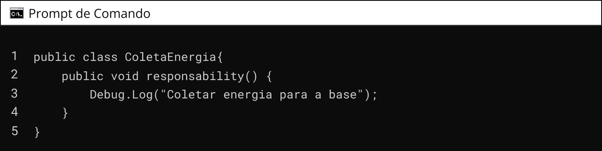 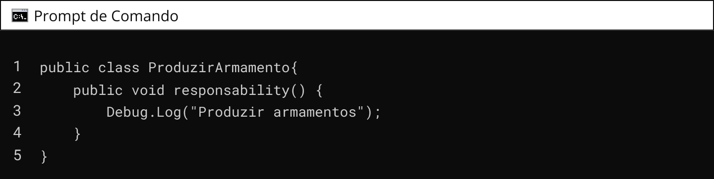Note que as três classes possuem a mesma estrutura, têm o método responsability() que escreve no console o que cada sistema irá executar. A seguir, devemos implementar a classe GameFacade que fará o papel do nosso centro de controle.
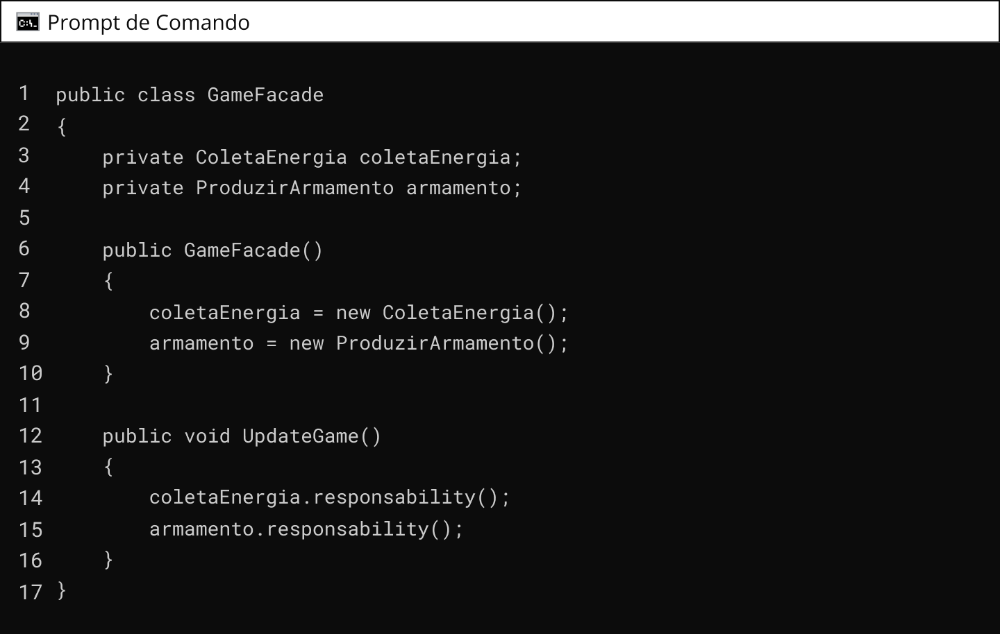No código do jogo na Unity, podemos criar uma instância da GameFacade e chamar o método UpdateGame() para atualizar o jogo. Internamente, a fachada irá lidar com todas as complexidades dos subsistemas de coleta de energia e produção de armas de forma transparente, permitindo que você se concentre em outras lógicas do jogo.
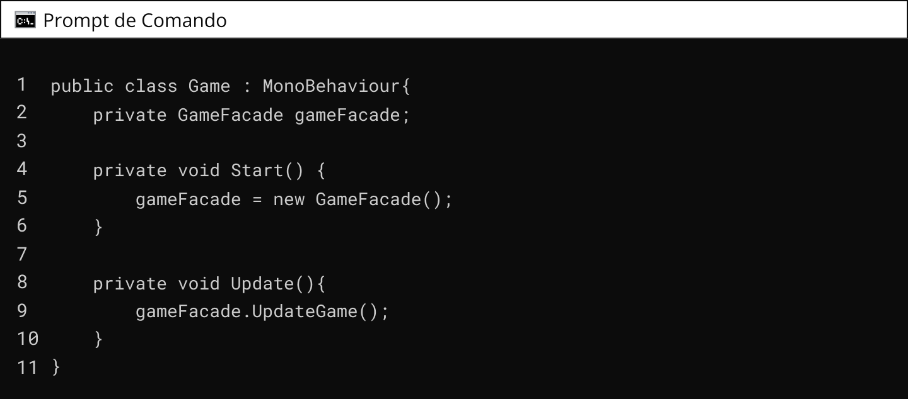Percebeu que solicitamos ao GameFacade para executar duas operações (Coletar energia e produzir armamento)? Cada operação dessas tem um conjunto de subsistemas. No entanto, não foi necessário executar cada um dos subsistemas diretamente, pois o GameFacade se encarregou dessa tarefa. Nem precisamos nos preocupar com a forma que esses subsistemas foram implementados. legal, não é?!
QUESTÃO 3
Avalie se a afirmação a seguir é verdadeira ou falsa.
O Padrão de Projetos Facade é um padrão de design estrutural que fornece uma interface simples para um sistema complexo, ocultando suas complexidades e fornecendo ao cliente uma maneira mais fácil de acessar o sistema.
Os padrões de projeto são técnicas de programação que proporcionam soluções para problemas comuns no desenvolvimento de software. Eles servem para vários propósitos como reuso de software, facilitar a comunicação entre desenvolvedores, promover o bom design de software, deixar o software mais fácil de manter.
Os padrões de projeto estruturais são fundamentais quando se trata de estabelecer e simplificar as relações entre diferentes classes ou objetos. Eles são especialmente úteis em jogos digitais, onde a complexidade do código pode aumentar rapidamente à medida que novos elementos e funcionalidades são adicionados. O uso desses padrões pode ajudar a manter o código organizado, flexível e fácil de manter, permitindo que os desenvolvedores se concentrem mais na lógica do jogo e menos na estrutura do código.